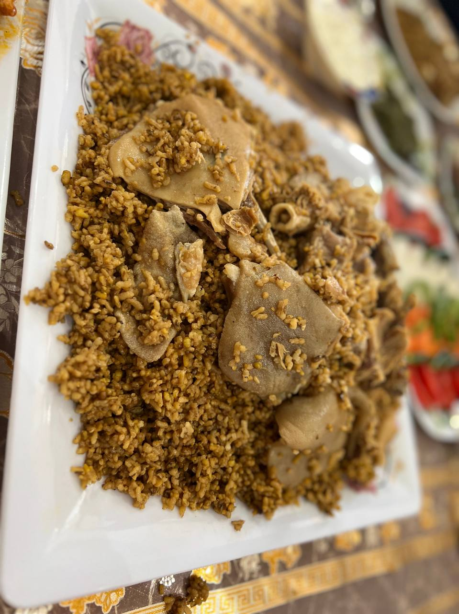

Recipe Details
Kechiri Gosht Land
Kichiri Gosht Land is a traditional Afghan dish that is famous for its rich flavor and unforgettable taste.This delicious meal is made with a perfect combination of rice, mung beans (Mung Dal), and tender meat, slow-cooked with special Afghan spices.It is a very unique dish that you cannot easily find in restaurants or anywhere else — it is usually made at home with love and care. Kichiri Gosht Land is more than just food; it represents Afghan culture, family gatherings, and hospitality. Once you taste it, you will never forget its amazing flavor!
- Land meat
- Rice
- Mung beans
- Cinnamon
- Cardamom
- Onion
- Tomato paste
Ingredients:
Cooking Steps:
First, steam the lamb meat in a large pot with plenty of water until it is partially cooked. Then, remove the meat from the water and set it aside. Next, chop the onions and fry them in oil until they become dark in color. After that, add the tomato paste and mung beans on top of the fried onions. Once these ingredients are slightly fried in the oil, add the meat broth (the water we previously set aside).Now, add cinnamon, cardamom, and salt to the mixture. Once the water starts boiling, add the rice that has been soaked in water beforehand. Let the rice cook in this water until it is nearly cooked and the water evaporates. Once the water is mostly dried up, place the lamb meat on top of the rice and cover the pot. Let it steam for about an hour, and after one hour, the dish is ready to be served.